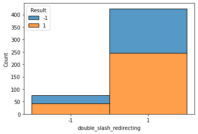

Phishing Risk Classification
2022
Overview
I built Phishing Risk Classification as a comparative machine-learning study focused on detecting malicious websites from structured URL and page-level indicators. I framed phishing mitigation as a supervised classification problem: given a fixed feature vector extracted from a suspicious website, predict whether the site should be treated as legitimate, suspicious, or phishing-risk aligned. I compared individual and ensemble classifiers to determine which architecture best balances accuracy, precision, recall, and F1-score for practical anti-phishing use.
Problem
Traditional anti-phishing tools often depend on static blacklists, browser toolbars, or known-domain databases. Those approaches can fail when attackers generate new domains, use character substitution, manipulate URL structure, or deploy convincing cloned pages before the blacklist has been updated. I therefore evaluated whether a feature-driven classifier could generalize beyond a specific list of known malicious domains by learning structural patterns associated with phishing behavior.
Dataset And Preprocessing
I used the UCI phishing dataset, containing 11,055 samples with 30 engineered website features. The features encode signals such as URL length, pop-up-window behavior, double-slash redirecting, and related lexical or page-structure attributes. Each feature was represented with the dataset's ternary encoding: `1` for legitimate, `0` for suspicious, and `-1` for phishing. Because the raw feature values were initially stored in a non-numeric format, I applied Unicode decoding and converted the full matrix into numerical feature vectors usable by scikit-learn classifiers.
I split the dataset into a 75% training partition and a 25% testing partition. This setup allowed my models to learn from a majority of the feature matrix while reserving unseen examples for performance evaluation. I emphasized accuracy, precision, recall, F1-score, and confusion matrices so I could distinguish between broad correctness and the cost of false negatives or false positives in a cybersecurity setting.
Methods
I implemented three model families. The first was K-Nearest Neighbors, which classifies each sample according to the labels of nearby points in the 30-dimensional feature space. KNN was useful as a distance-based baseline because it does not impose an explicit parametric decision boundary, but its performance depends heavily on neighborhood size and the separability of the encoded feature vectors.
My second model was a Random Forest Classifier. I selected RFC because phishing features are heterogeneous and can interact nonlinearly; ensembles of decision trees are well suited to capturing feature thresholds, feature interactions, and robust voting behavior. I tuned the number of estimators and found that increasing the tree count improved model stability, with 100 estimators producing the strongest reported balance of metrics.
My third approach was a Voting Classifier ensemble composed of a Decision Tree, Support Vector Classifier, and Random Forest Classifier. I used this ensemble to test whether aggregating models with different inductive biases could outperform the strongest individual classifier. I intentionally compared the ensemble against tuned single-model baselines to evaluate whether architectural diversity alone was enough without extensive ensemble hyperparameter tuning.
Results
My tuned Random Forest Classifier achieved the best overall performance, reaching 97.11% accuracy. The tuned KNN reached 95.81% accuracy, while the untuned DecisionTree-SVC-RFC ensemble reached 96.71%. The RFC's confusion matrix and metric profile showed the strongest classification reliability, suggesting that tree aggregation captured the feature interactions more effectively than distance-based voting alone.
My RFC result mattered because phishing detection is sensitive to false negatives: a model that misses phishing sites can leave users exposed to credential theft, identity theft, ransomware, or financial loss. I therefore cared about precision and recall alongside accuracy. My tuned RFC provided the best combined profile, while the ensemble's competitive performance suggested that a more carefully optimized voting strategy could be promising in future work.
Conclusion
I concluded that Random Forest was the most viable architecture for this phishing-risk classification setup because it handled nonlinear feature interactions, reduced variance through tree-level voting, and produced the strongest measured accuracy among the tested models. My clear next step would be to tune the ensemble model more aggressively, experiment with additional voting schemes, and deploy the best classifier as a browser plugin or lightweight web service that can evaluate suspicious URLs in real time.
